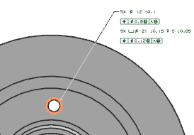
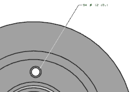

查找与孔关联的 PMI
-
在部件导航器中，双击前视图以将它设为工作视图。
-
在选择条上的类型过滤器列表中，选择边。
-
在图形窗口中，选择隶属于现有 PMI 数据的沉头孔中直径较大的圆的边。

-
右击选定边并选择查找与几何体关联的 PMI。
-
在查找与几何体关联的 PMI 对话框中，清除创建查询结果视图复选框
 。
。 -
点击确定。
除非已关闭信息特征，否则 NX 都将显示一个信息框，提示您已创建临时显示。
-
点击确定以关闭信息框。
在临时显示中，只显示了与孔外侧边直接关联的 PMI 标签。

两个特征控制框与注释只与孔的内测边关联，因此不会显示在临时显示中。
-
按下 Ctrl+F 键以调整窗口显示至合适大小。
NX 将丢弃临时显示，恢复特征控制框与注释的显示。
-
关闭所有部件。